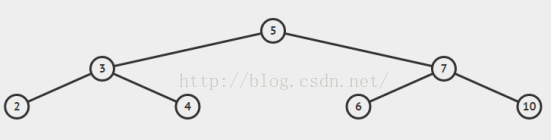
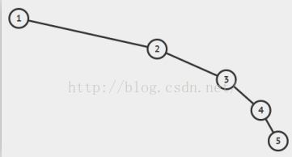
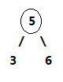
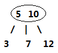
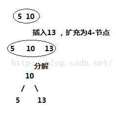
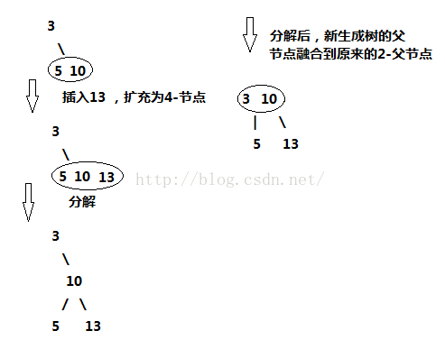
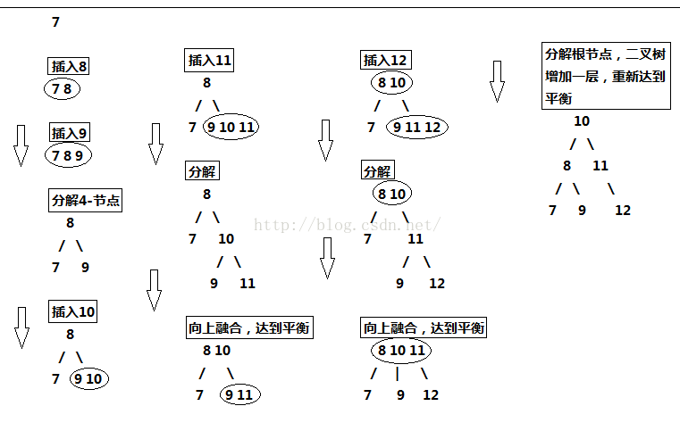

突然发现一个非常好的博客，从演变的角度去讲了红黑树，相信大家看了之后也会更加理解红黑树的含义。原链接
前言
红黑树，对不少人来说是个比较头疼的名字，在网上搜资料也很少有讲清楚其演变来源的，多数一上来就给你来五条定义，红啊黑啊与根节点距离相等之类的，然后就开始进行旋转、插入、删除这些操作。一通操作下来，连红色和黑色怎么来的，是什么含义，有什么作用都云里雾里的，能搞清楚就怪了。
本文介绍红黑树，暂时不涉及任何代码，只是帮助你理解红黑树的演变来源，树结构中红黑色具体含义，保证你理解了过后，再去看什么旋转插入的东西，要清晰得多。换句话说，理解本文要描述的内容是从代码级理解红黑树的基础。
开始之前，我还是恳请你保持耐心，一步一步仔细看完，浮躁的话真的做不好任何事情。
正文
红黑树的起源，自然是二叉查找树了，这种树结构从根节点开始，左子节点小于它，右子节点大于它。每个节点都符合这个特性，所以易于查找，是一种很好的数据结构。但是它有一个问题，就是容易偏向某一侧，这样就像一个链表结构了，失去了树结构的优点，查找时间会变坏。
所以我们都希望树结构都是矮矮胖胖的，像这样：

而不是像这样：

在这种需求下，平衡树的概念就应运而生了。
红黑树就是一种平衡树，它可以保证二叉树基本符合矮矮胖胖的结构，但是理解红黑树之前，必须先了解另一种树，叫2-3树，红黑树背后的逻辑就是它。
好吧来看2-3树吧。
2-3树是二叉查找树的变种，树中的2和3代表两种节点，以下表示为2-节点和3-节点。
2-节点即普通节点：包含一个元素，两条子链接。
3-节点则是扩充版，包含2个元素和三条链接：两个元素A、B，左边的链接指向小于A的节点，中间的链接指向介于A、B值之间的节点，右边的链接指向大于B的节点。
2-节点：
3-节点：
在这两种节点的配合下，2-3树可以保证在插入值过程中，任意叶子节点到根节点的距离都是相同的。完全实现了矮胖矮胖的目标。怎么配合的呢，下面来看2-3树的构造过程。
所谓构造，就是从零开始一个节点一个节点的插入。
在二叉查找树中，插入过程从根节点开始比较，小于节点值往右继续与左子节点比，大于则继续与右子节点比，直到某节点左或右子节点为空，把值插入进去。这样无法避免偏向问题。在2-3树中，插入的过程是这样的。
如果将值插入一个2-节点，则将2-节点扩充为一个3-节点。
如果将值插入一个3-节点，分为以下几种情况。
- 3-节点没有父节点，即整棵树就只有它一个三节点。此时，将3-节点扩充为一个4-节点，即包含三个元素的节点，然后将其分解，变成一棵二叉树。

此时二叉树依然保持平衡。 - 3-节点有一个2-节点的父节点，此时的操作是，3-节点扩充为4-节点，然后分解4-节点，然后将分解后的新树的父节点融入到2-节点的父节点中去。
 - 3-节点有一个3-节点的父节点，此时操作是：3-节点扩充为4-节点，然后分解4-节点，新树父节点向上融合，上面的3-节点继续扩充，融合，分解，新树继续向上融合，直到父节点为2-节点为止，如果向上到根节点都是3-节点，将根节点扩充为4-节点，然后分解为新树，至此，整个树增加一层，仍然保持平衡。
第三种情况稍微复杂点，为了便于直观理解，现在我们从零开始构建2-3树，囊括上面所有的情况，看完所以步骤后，你也可以自己画一画。
我们将{7,8,9,10,11,12}中的数值依次插入2-3树，画出它的过程：

所以，2-3树的设计完全可以保证二叉树保持矮矮胖胖的状态，保持其性能良好。但是，将这种直白的表述写成代码实现起来并不方便，因为要处理的情况太多。这样需要维护两种不同类型的节点，将链接和其他信息从一个节点复制到另一个节点，将节点从一种类型转换为另一种类型等等。
因此，红黑树出现了，红黑树的背后逻辑就是2-3树的逻辑，但是由于用红黑作为标记这个小技巧，最后实现的代码量并不大。(但是，要直接理解这些代码是如何工作的以及背后的道理，就比较困难了。所以你一定要理解它的演化过程，才能真正的理解红黑树)
我们来看看红黑树和2-3树的关联，首先，最台面上的问题，红和黑的含义。红黑树中，所有的节点都是标准的2-节点，为了体现出3-节点，这里将3-节点的两个元素用左斜红色的链接连接起来，即连接了两个2-节点来表示一个3-节点。这里红色节点标记就代表指向其的链接是红链接，黑色标记的节点就是普通的节点。所以才会有那样一条定义，叫“从任一节点到其每个叶子的所有简单路径都包含相同数目的黑色节点”，因为红色节点是可以与其父节点合并为一个3-节点的，红黑树实现的其实是一个完美的黑色平衡，如果你将红黑树中所有的红色链接放平，那么它所有的叶子节点到根节点的距离都是相同的。所以它并不是一个严格的平衡二叉树，但是它的综合性能已经很优秀了。
借一张别人的图来看：
红链接放平：
所以，红黑树的另一种定义是满足下列条件的二叉查找树：
- 红链接均为左链接。
- 没有任何一个结点同时和两条红链接相连。(这样会出现4-节点)
- 该树是完美黑色平衡的，即任意空链接到根结点的路径上的黑链接数量相同。
理解了这个过程以后，再去看红黑树的各种严格定义，以及其插入，删除还有旋转等操作，相信你脑子里的思路会清晰得多的。